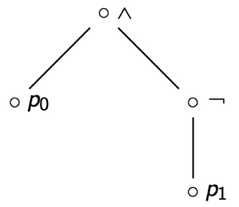
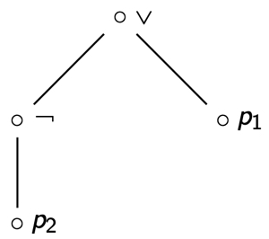
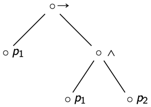
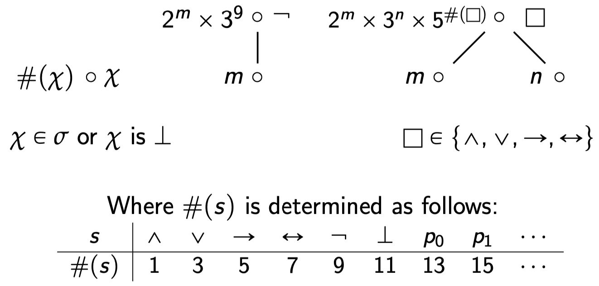

Parse Trees and Compositional Definitions
Exercises
-
What is the formula associated with the following parse tree?
Show Answer
\((p_0 \wedge (\neg p_1))\)
-
Find the parse tree for the formula \(((\neg p_2)\vee p_1)\).
Show Answer

-
Find the parse tree for the formula \((p_1 \rightarrow (p_1\wedge p_2))\).
Show Answer

-
The following compositional definition assigns a number, called the Gödel number, to each propositional formula.
- What is the Gödel number of the formula \((\neg(\neg p_3))\)?
- What is the Gödel number of the formula \((\bot \wedge (p_0 \vee p_0))\)?
Show Answer
- The Gödel number of the formula \((\neg(\neg p_3))\) is: \(2^{2^{19}\times 3^9}\times 3^9\).
- The Gödel number of the formula \((\bot \wedge (p_0 \vee p_0))\) is \(2^{11}\times 3^{2^{13}\times 3^{13}\times 5^3}\times 5^1\)